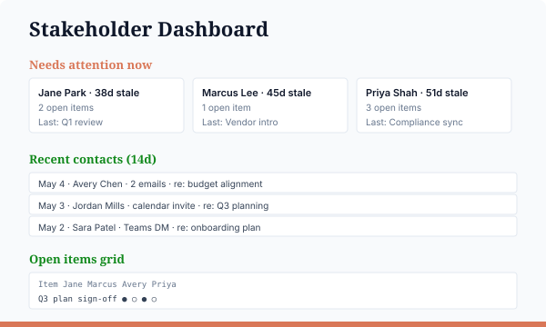

🤝 Stakeholder Management
What you'll build
A self-deepening relationship dashboard. Each stakeholder is a markdown file (About, Last Contact, Open Items, Goals, Next Touchpoint). The slash command reads all of them, layers in fresh M365 activity (emails, calendar, Teams), and renders a dashboard — who's stale, who has open items waiting, who you exchanged messages with this week. After rendering, it appends today's observations back into each stakeholder's MD file, so your context grows every time you run it.

What you'll need
- Claude Code installed
- The Microsoft 365 connector authenticated
- A
stakeholders/folder with one<name>.mdfile per stakeholder (the recipe will scaffold one if the folder is empty)
Step 1 — Ask Claude to build your slash command
Open Claude Code in any folder. Paste this prompt, swap your specifics into the [FILL IN: ...] placeholders, and hit enter. Claude will write the slash command file at ~/.claude/commands/stakeholder-update.md for you.
Create a Claude Code slash command at ~/.claude/commands/stakeholder-update.md. The /stakeholder-update command should: 1. Read every file in stakeholders/<name>.md (sections: About / Last Contact / Open Items / Goals / Next Touchpoint) 2. Query Microsoft 365 for recent activity per stakeholder (emails, calendar invites, Teams chats) over the lookback window 3. Render site/index.html with sections: Needs attention now, Recent contacts, Open items grid, Upcoming touchpoints 4. Append a dated "Recent activity" entry into each stakeholder's MD file so the record deepens with every run If the stakeholders/ folder is empty, scaffold one example file using these as my defaults: My stakeholders (a few to start — I'll add more later): - [FILL IN: e.g., "Jane Park — VP Operations at Acme Corp; quarterly business reviews", "Marcus Lee — vendor lead at FinTech Inc; mid-sized contract"] Stale threshold (days without contact before flagged): - [FILL IN: default 30 days] Microsoft 365 lookback window: - [FILL IN: default 14 days] Write proper YAML frontmatter and a clear prompt body. The write-back step should be idempotent per day.
What the generated file should look like
Claude should write something close to this at ~/.claude/commands/stakeholder-update.md:
---
description: Update stakeholder dashboard from MD files + M365 activity
---
You are building a relationship dashboard for a director who manages a list
of internal and external stakeholders.
PERSISTENT MEMORY
- stakeholders/<name>.md — one file per stakeholder. Sections:
About, Last Contact, Open Items, Goals, Next Touchpoint.
These files start light and accumulate over time.
LIVE SIGNAL
- Microsoft 365 connector — emails to/from each stakeholder, calendar invites
involving them, Teams chats. Default lookback: 14 days.
WHAT TO DO
1. Read every file in stakeholders/. If empty, scaffold one example file
and ask the user to fill it in.
2. For each stakeholder, query M365 for activity in the lookback window.
3. Cross-reference: which open items match recent messages? Whose
"Last Contact" is older than the stale threshold (default 30 days)?
4. Write site/index.html — dashboard with:
- "Needs attention now" (stale + open items)
- "Recent contacts" (chronological)
- "Open items grid" (item × stakeholder)
- "Upcoming touchpoints"
5. AFTER rendering, append a dated observation entry into each stakeholder's
MD file: e.g. "2026-05-06: 3 emails exchanged, calendar invite for next Tue"
(under a "Recent activity" section, creating it if missing).
OUTPUT
- site/index.html, site/styles.css (one-time)
- Updated stakeholders/<name>.md files
- A short summary in chat: who needs attention, what was appended.Reference copy lives at recipes/stakeholder-update.md.
Step 2 — Run it
> /stakeholder-update
✓ Read 12 stakeholder files
✓ Fetched M365 activity (last 14 days)
✓ 3 stakeholders flagged stale
✓ 7 open items match recent threads
✓ Wrote site/index.html
✓ Appended activity to 9 MD filesStep 3 — See it
> open site/index.htmlCustomize
- Stale threshold. Default 30 days; tune in the slash command body.
- Lookback window. 14 days by default; widen for slower-moving relationships.
- Write-back. Tweak what observations get appended back into the MD files (or turn it off for read-only mode).
Why directors care
Persistent markdown context plus live M365 signal turns relationship management from a memory game into a self-updating system. The MD files are yours forever — even if you stop using the slash command, the record stays.